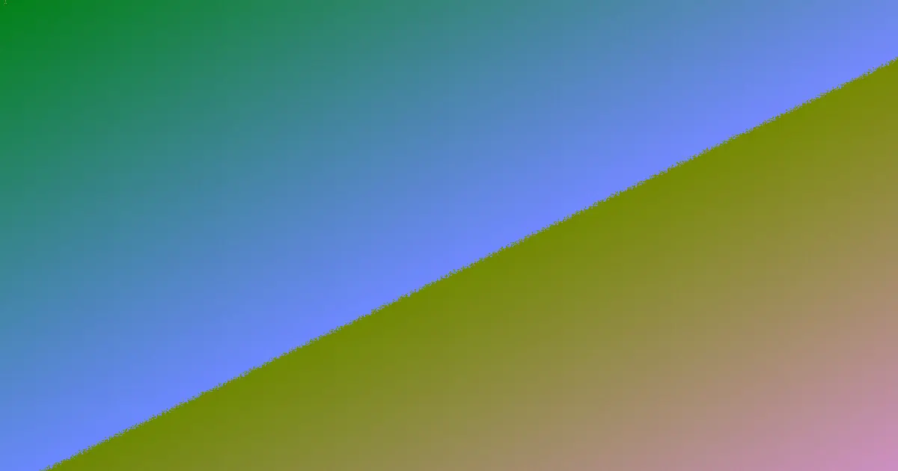

For Toowoomba fence work, use a written quote after a site measure, keep enquiry-stage payment at zero, and treat approvals as a parallel track. Boundary fences usually bring neighbour contribution rules, fences to 2 m are generally accepted development, a fence on a retaining wall is measured as combined height, paid work at $3,300 or more points to a QBCC-licensed contractor, and pool barriers must meet the Queensland pool safety standard. Nine service types sit behind the choice: Colorbond, timber, pool, aluminium slat, PVC, commercial, gates, privacy screening and repairs.
For local buyers, fencing contractors toowoomba council and approvals Use it to plan the approval path before colour samples and gate motors enter the conversation.
Fencing Contractors Toowoomba Council and Approvals Explained
A fence can fail at the approval stage even when the price looks right. The safer sequence is to book the site measure, request a written quote, then test the job against boundary rules, height limits, retaining-wall geometry, pool barrier duties and contractor licensing. The companion written quote and site-measure guide for Toowoomba fencing explains why the quote should expose run length, material, old-fence removal and access before any booking is made.
In Queensland, a fence up to 2 m above natural ground level is generally accepted development. Go higher and the job can become building work that needs certifier approval. A fence fixed to a retaining wall is measured as combined height, so a low wall can push an otherwise ordinary fence into a different approval lane. Pool fencing is not a style upgrade first; it is a barrier question checked against the Queensland pool safety standard. For paid work reaching $3,300 or more, the licensing question moves from optional to central, because the QBCC threshold becomes relevant once the contract value crosses that line.
Boundary talks are part of compliance
When a fence stands on the boundary, it is a dividing fence rather than a private side project. The practical baseline is equal contribution between adjoining owners for a sufficient fence. If one side wants a taller profile, thicker posts, premium infill or a finer finish, the extra spend can remain with the owner asking for the higher specification. A clear quote helps separate the fair baseline from the preferred upgrade.
Before work starts, line up the fence line, the scope, the estimated cost and the material in writing. That paper can be shown to a neighbour without turning the chat into a sales pitch. If agreement stalls, the pathway can involve a notice to contribute and at least one written quotation. Dividing-fence disputes can land at QCAT, so early clarity is cheaper than a late argument.
Match the material to the approval burden
Material choice changes the compliance load. Colorbond suits many Toowoomba boundary jobs because it is quick to erect, needs no painting and offers colours that sit well with brick and render. Timber still earns its place on character streets, with paling, lapped-and-capped and picket styles named among common services. PVC is positioned as a long-life option that avoids painting altogether.
- Boundary and privacy runs: compare Colorbond, timber and PVC against height, wind exposure and the neighbour baseline.
- Street frontages and courtyards: aluminium slat fencing reads as a screen, not always full privacy fencing.
- Pools: glass and aluminium belong in a compliance-first group because the barrier must satisfy the pool safety standard.
- Premises, schools and compounds: chain-wire, tubular steel and commercial-grade fencing are the named service family.
Gates should be planned with the fence line they hang from. A sliding, swing or automated gate has hardware, power and alignment needs that cannot be separated from the run it closes.
Who should pause before booking
This angle suits Toowoomba homeowners, landlords and small commercial owners who know the fence needs work but have not settled the approval path. It also helps owners weighing repair against replacement after leaning posts, cracked rails or storm damage. Residential choices usually begin with privacy, boundary position and street appearance. Commercial sites add access control, duty of care and traffic near gates.
Rural owners need a different conversation. The local service list names rural fencing alongside local contractors, yet the stronger detail sits with residential, pool, privacy, gate and commercial work. Use the enquiry stage to ask what materials, access assumptions and site conditions have been allowed for, especially where slopes, long runs or stock pressure change the job.
A short pre-booking checklist
Bring the job to a contractor with the approval questions already sorted. That makes the quote easier to compare and harder to misunderstand.
- Mark the fence line and note whether it is shared, around a pool, across a driveway or screening a side yard.
- Measure or estimate the run length, then photograph tight access, corners, slopes, retaining walls and old posts.
- Ask for a written quote after a site measure, with material, run length, demolition and access shown separately.
- Check the 2 m height rule, combined height on retaining walls, pool barrier duties and the $3,300 QBCC trigger.
- Prepare the neighbour conversation, notice pathway or repair-versus-replacement decision before paying any deposit or booking the crew.
- Confirm the fence job. Define whether the run is a boundary, pool barrier, driveway gate, privacy screen, repair or commercial installation.
- Record the site. Measure the run and photograph access, slopes, corners, retaining walls, old posts and anything that limits machinery.
- Request a written quote. Ask for material, run length, old-fence removal and site access as visible items after a site measure, with no deposit at enquiry stage.
- Run the approval checks. Test height, retaining-wall combined height, neighbour contribution, pool barrier compliance and the $3,300 licensing trigger.
- Book only after scope is settled. Compare like with like, settle the neighbour pathway where needed, then confirm start access and payment terms in writing.
| Situation | Main approval pressure | Question to settle first |
|---|---|---|
| Boundary fence | Dividing fence contribution and neighbour agreement | Who pays for the sufficient baseline and any upgrade |
| Fence near 2 m | Accepted development limit and certifier pathway | Measured height above natural ground level |
| Retaining wall plus fence | Combined height can change approval status | Wall height added to fence height |
| Pool barrier | Queensland pool safety standard | How compliance will be checked before handover |
| Paid work at $3,300 or more | QBCC licensing trigger | Whether the contractor setup matches the contract value |
Common questions
Is a 2 m fence always approval free in Toowoomba? Not always. In Queensland, a fence up to 2 m above natural ground level is generally accepted development. A higher fence can become building work needing certifier approval, and a fence on a retaining wall is measured as combined height.
Who pays for a boundary fence upgrade? The starting point is equal contribution from adjoining owners for a sufficient dividing fence. If one owner wants a higher specification, the extra cost can sit with that owner. A written quote helps show the baseline and the upgrade separately.
When does contractor licensing matter most? Once paid work reaches $3,300 or more, the QBCC licensing trigger becomes relevant. Pool barriers add a separate compliance duty because they must meet the Queensland pool safety standard rather than simply looking secure.
Independent planning guide for Toowoomba fence approvals, quoting checks and neighbour readiness before work is booked.